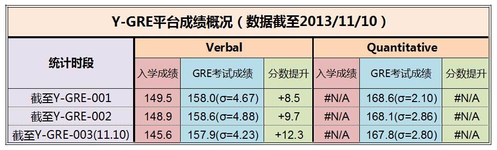

云英语
云英语：因学术而改变

新GRE成绩到底多少分够用？
新GRE考试（general test）分为Quantitative Reasoning（数学），Verbal Reasoning（语文）和Analytical Writing（分析性写作）三部分。其中数学和语文的分值范围都是130（相当于零分）-170（相当于满分），作文的分值范围是0-6。
对中国大陆地区考生来讲，只要稍加准备，数学很容易拿到接近满分的成绩（166-170）；而写作部分，则无论如何很难突破4分。所以具备区分性的几乎只有语文部分（但对于人文和社科类专业，申请者最好还是能够拿出更富竞争力的写作成绩）。所以那种纠结于GRE总分到底是315还是325够用的惯常做法，其实是完全没有意义的。
说到这个决定性的语文部分，美国最好的研究生院的入学Verbal成绩一般在160分左右，但这是所有本土学生和海外学生的平均值，并且各专业有所不同。一般来说，理工科专业的中国学生，如能达到155+，那么申请任何顶尖的研究生院都不会构成障碍。如果把申请范围放宽到Top30左右，那么好的留学中介机构一般只要求不低于150（>全球44%），即可签署保录取合同。
当然，对于出国申请来说，GRE成绩只是反映个人学术能力的一个参考：有些专业要求申请者提供其他考试成绩（如法学院是LSAT，医学院是MCAT，商学院是GMAT与GRE都可以），有些专业的研究生院（比如艺术类）不需要GRE或其他同类能力测试，即便是理工科也有完全不要求GRE成绩的顶级研究生院（比如MIT的EECS）。而且话说回来，如果你的GPA是4.0，又在Science一类的顶级期刊发表文章，又有哪个偏执狂会要求你的GRE成绩呢？
版权所有 2011-2015 云英语 Y-English All Rights Reserved
地址：北京市海淀区五道口华清嘉园商务会馆802
电话：400-876-3898 010-82863898 82863899 传真：010-82863897